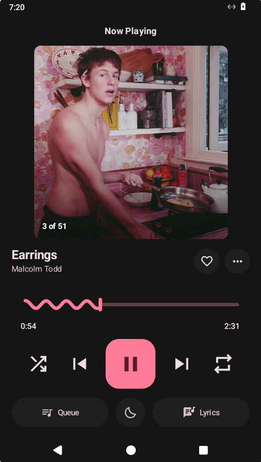

Un cliente de YouTube Music para Android
Reproducción en segundo plano, descargas offline, importa tus playlists de YouTube Music y escucha sin anuncios.
 CM Security
CM Security Lookout
Lookout- McAfee
Este APK se analizó y no contiene virus, malware ni publicidad. Es el mismo archivo que puedes comprobar con el SHA-256 de abajo.
89e7e23e3a4cfe0364c9c008818d453fff850482de6d341e98aa7db1a192dee4
YouTube Music, con las piezas que faltaban
OpenYTMusic es un cliente ligero de YouTube Music construido sobre Material Design 3. Usa la misma música que ya tienes en tu cuenta, pero con reproducción en segundo plano de verdad, descargas que puedes escuchar sin datos y una interfaz sin anuncios ni interrupciones. Construido por un fan de la música.
Características
Reproducción en segundo plano
Sigue sonando con la pantalla apagada, en otra app o al cerrar el reproductor.
Descargas offline
Guarda canciones y escúchalas sin conexión, sin gastar datos.
Importa tus playlists
Inicia sesión en YouTube Music y trae tus playlists y tus «Me gusta» tal cual están.
Sin anuncios
Ni banners, ni vídeos, ni cortes entre canciones. Solo música.
Material Design 3
Tema oscuro, color dinámico y una interfaz limpia de verdad.
Letras y radio
Letras sincronizadas y radios infinitas a partir de cualquier canción.

Cómo empezar
Descarga el APK
Son 7,6 MB. No hace falta cuenta ni registro para bajar el archivo.
Ábrelo e instálalo
Android pedirá permitir «instalar apps desconocidas» para tu navegador: es lo normal para cualquier app que no venga de Play Store.
Inicia sesión en YouTube Music (opcional)
Sirve para importar tus playlists y tus «Me gusta», y para que YouTube deje de pedirte verificación al reproducir.
Qué hay de nuevo
- Importación a prueba de balas. Se corrigió un bucle que podía colgar la app al traer tus playlists.
- Tu sesión, más protegida. Ya no se copia a la nube ni viaja entre dispositivos, y cerrar sesión borra las cookies de verdad.
- Reproducción más estable. La música sigue al cerrar la app desde Recientes y la cola no se corrompe al salir.
- Enlaces y «compartir». Abren bien aunque la app estuviera cerrada.
Preguntas frecuentes
¿Es gratis?
Sí. Sin suscripción, sin compras dentro de la app y sin necesidad de crear ninguna cuenta para usarla.
¿Necesito una cuenta de YouTube Music?
Para escuchar música, no. La cuenta es opcional: sirve para importar tus playlists y tus «Me gusta», y para reducir las verificaciones de YouTube.
¿Funciona sin conexión?
Sí, con lo que hayas descargado. Esa copia se queda en tu teléfono y se reproduce sin datos.